Como Utilizar o Portal do Paciente HC
-
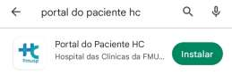
Ícone da Play Store, indicando onde baixar o aplicativo para Android.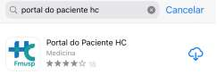
Ícone da App Store, indicando onde baixar o aplicativo para iOS.Procure por Portal do Paciente HC na Play Store (Android) ou App Store (iOS). Toque em Instalar e aguarde o download.
-
Tela inicial do aplicativo, onde você pode acessar o portal ou iniciar o cadastro.
Abra o aplicativo e toque em Acessar o Portal. Digite seu CPF e senha cadastrados para fazer login. Se for seu primeiro acesso, clique em Primeiro Acesso para cadastrar sua senha.
-
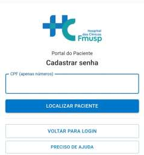
Tela para cadastrar uma nova senha.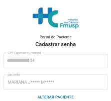
Campo para digitar o CPF e data de nascimento.Antes do primeiro acesso, clique em CADASTRAR SENHA. Na tela seguinte, digite apenas os números do seu CPF e sua data de nascimento. Clique em LOCALIZAR PACIENTE para continuar.
-
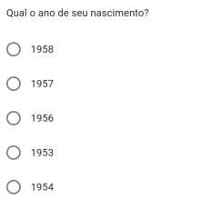
Pergunta sobre o ano de nascimento.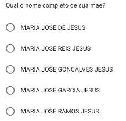
Pergunta sobre o nome da mãe.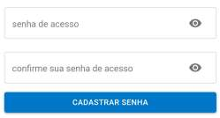
Campos para cadastrar e confirmar a nova senha.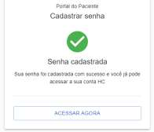
Mensagem de sucesso após o cadastro da senha.Responda corretamente às perguntas de segurança, como ano de nascimento e nome da mãe. Após isso, cadastre sua nova senha e confirme. Você verá uma mensagem de sucesso ao finalizar.
-
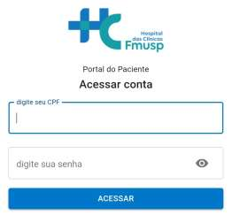
Tela para acessar a conta.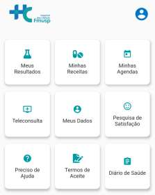
Menu principal do aplicativo.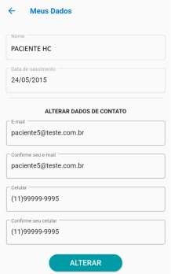
Campos para atualizar e confirmar e-mail e telefone.No menu principal, acesse Meus Dados para atualizar e confirmar seu e-mail e telefone. Mantenha seus dados sempre atualizados para garantir o recebimento de informações importantes.
-
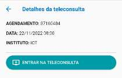
Botão para entrar na teleconsulta.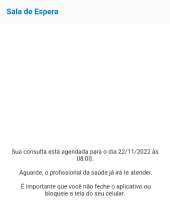
Tela de sala de espera virtual.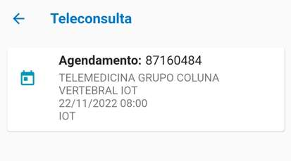
Card com detalhes da teleconsulta agendada.Veja suas consultas em Minhas Agendas ou Teleconsulta. Confira os detalhes do agendamento e clique em Entrar na Teleconsulta no horário marcado. Aguarde na sala de espera até ser chamado pelo profissional de saúde.
-
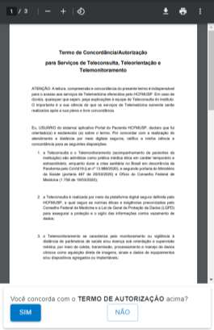
Aceite do termo de consentimento.Permissão para uso da câmera.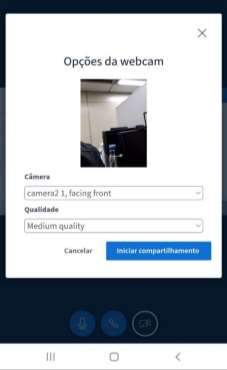
Opções de configuração da webcam.Permissão para uso do microfone.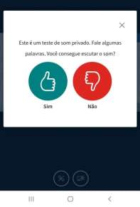
Confirmação do áudio.Tela de conexão ao teste de áudio.Ícone indicando câmera desligada.Tela da consulta em vídeo.Participando da teleconsulta.Leia e aceite o Termo de Consentimento para iniciar. Permita o uso da câmera e microfone quando solicitado. Configure as opções de webcam e microfone, se necessário. Você pode ativar/desativar sua câmera durante a consulta. Participe no horário agendado.
-
Tela de finalização da teleconsulta.
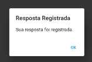
Confirmação de resposta registrada ou avaliação enviada.Ao término, aparecerá uma mensagem de agradecimento. Você pode registrar sua resposta ou avaliação, se solicitado.
-
Menu principal do aplicativo, onde é possível acessar outras funcionalidades como resultados, receitas e diário de saúde.
Acesse Meus Resultados, Minhas Receitas e Diário de Saúde pelo menu principal para acompanhar sua saúde de forma completa.
Em caso de dúvidas, consulte o manual completo ou entre em contato com o suporte da instituição.